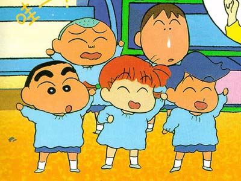

Crayon Shin-chan

Table of Contents
|
Series Information
|
Gameboy Games
SNES Games
|
Sufami Turbo Games
No information available at this time.
Other Resources
Anime Web Turnpike: Crayon Shin-chan Links
(you have to scroll down a bit)
Anime Video Game Resource Center © 1998 by
Luis A. Cruz